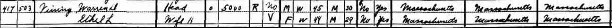
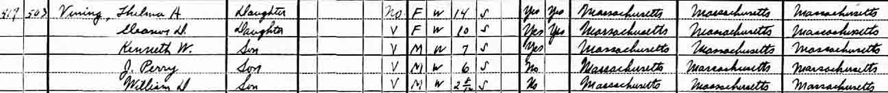
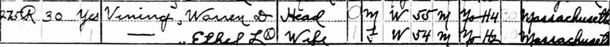
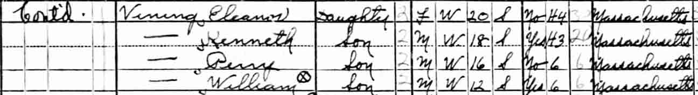
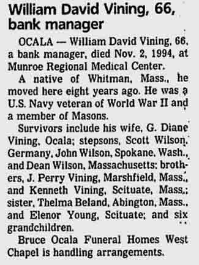

Census Data
| 1920 | 1930 | 1940 | |
| Warren Davis Vining | 35 | 45 | 55 |
| Ethel Linwood (Joseph) Vining | 36 | 44 | 54 |
| Thelma Alexina Vining | 3 years, 4 months | 14 | [living? in separate household] |
| Eleanor Dorothy Vining | 7 | 20 | |
| Kenneth Warren Vining | 7 | 18 | |
| Joseph Perry Vining | 6 | 16 | |
| William David Vining | 2 y., 8 m. | 12 |




Death Data
Obituary for William David Vining, son of Warren Davis Vining and Ethel Linwood (Joseph) Vining, in Ocala Star Banner, 4 November 1994, page 4B, column 6: